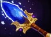

The successor to the last succesful cookout, this update provides another batch of content, with a focus on improving old heroes. However we can't fully resist creating new heroes,
so this patch also introduced the new strength hero: Kazuya Mishima.
GENERAL CHANGES
Bans should be enabled, get those pesky broken champs out of your games!
NEW HEROES
KAZUYA MISHIMA: NEW HERO
Kazuya seeks to conquer, this thirst has lead him to the Poelsemix arena. Will he once again be able throw his foes into a ravine?
ELECTRIC WIND GOD FIST: ACTIVE ABILITY
Kazuya delivers a lightning uppercut, dealing damage and briefly knocks up the enemy.
SPINNING DEMON: ACTIVE ABILITY
Kazuya delivers a swift spinning kick while dashing forward.
REVERSE NECK THROW: ACTIVE ABILITY
Kazuya throws the enemy behind him
RAGE/FURY: PASSIVE ABILITY
Kazuyas passive is split into 2 parts: Rage and Fury. Rage: While low enough on hp, Kazuya gains increased attack damage and spell damage. Fury: Kazuyas abilities requires fury, this is gained over time and by attacking, fury gain is increased while raged.
INFERNO: ULTIMATE ABILITY
Kazuya transforms into a demon and shoots a deadly laser, dealing heavy damage to enemies in its path. Kazuya will stay in demon form if the laser kills any hero.

SCEPTER EFFECT
Kazuya always stays in demon form after using inferno.
BALANCE CHANGES
Hero major changes
BRIAN: REWRITE COMPLETED
Base health 750 -> 700
Dakke-dak: IMPROVEMENTS
Radius 800 -> 700/800/900
New level 25 talent: +150 radius
New level 25 talent: -0.05 tickrate
RED CECIL: IMPROVEMENTS
Visuals updated
Now actually applies its debuff lol
Mana cost 100 -> 100/95/90/95
Slow -> -20/-30/-40/-50 -> -20/-25/-30/-35 (This didnt even work before so its kind of a buff lol)
Attack damage reduction -> -20/-30/-40/-50 -> -20/-25/-30/-35 (also kind of a buff lol)
Debuff duration -> 5 -> 2.5/3/3.5/4 (Also buff)
New level 15 talent: Also ignites the enemy for 65 damage every 0.5s
New level 20 talent: +2 duration
BUND A MOKAI: IMPROVEMENTS
Slightly updated visuals
The taunt part is now part of a level 15 talent
duration 3/4/5/6 -> 4/4.5/5/5.5
Miss chance 10 -> 40/35/30/25
mana cost 50 -> 80/70/60/50
strength 20/40/60/90 -> 30/55/80/105
No longer able to taunt magic immune or invulnereable enemies
New level 10 talent: Removes miss chance
New level 20 talent: +1.5 duration
CAROLINE WOZNIAKI: REWRITE COMPLETED
New particles effects
Swap sides: MINOR REWORK
No longer requires channeling, will auto swap after delay
Range 500/750/1000/1250 -> 800/950/1100/1250
Cast time 0.3 -> 1.25/1/0.75/0.5
Mana cost 100 -> 60
New level 10 talent: cast time -0.5s
Crossfitter btw: REWORK
Crossfitter btw will now randomly allocate 25/50/75/100 points randomly between ad, as, str, agi, giving 1 stat per point allocated. Rerolls every 10 seconds
New level 20 talent: +50 points to allocate
New level 15 talent: can now also roll base attack rate reduction (-0.01 per point allocated)
Smash!: IMPROVEMENTS
Now a toggle instead of weird auto cast
Provides 25/50/75/100 attack range while active
Damage 65/85/105/125 -> 45/65/85/105
Stun chance: 20% -> 10/15/20/25%
New level 10 talent: +15% stun chance
New level 15 talent: +75 attack range
New level 25 talent: -35 mana cost
Matchpoint!: IMPROVEMENTS
Charge time 1 -> 1.5
Now aimable
Now only able to hit one target
Vision provided by the shot greatly increased
Now requires full charge, damage therefore also no longer scales with charge time
Range 2600 -> 2000/2300/2600
New level 20 talent: +400 damage
New level 25 talent: Now pierces like before
NEW SCEPTER EFFECT
Now shoots 3 balls as a classical triple spread
KROGH
HA GAY!: IMPROVEMENTS
New visuals
Range 800 -> 700/775/850/925
Mana cost 100/110/120/130 -> 100/95/90/85
Cooldown 20 -> 20/18/16/14
Now provides vision of the target for the duration
New level 20 talent: Now also applies emasculation (Strength -40)
New level 10 talent: +1s duration
HARALD BLÅTAND: REWRITE COMPLETED
New model
Wrath of Thor: IMPROVEMENTS
No longer gives true sight of the target (will still damage invis units)
Range 700 -> 600/650/700/750
New level 25 talent: Now stuns for 1.5 seconds
New level 25 talent: Also hits the next closest enemy
Runesten: IMPROVEMENTS
New visuals
Cast range 875 -> 800
Cooldown 12/9/6/3 -> 15/14/13/12
Runesten duration -> 15 -> 6/7/8/9
Aura radius 600 -> 500/550/600/650
Aura damage 30 -> 20/25/30/35
Aura movement speed 10 -> 15/18/21/24
Aura attack speed 30 -> 25/30/35/40
New level 10 talent: +300 aura radius
New level 10 talent: +3 runesten duration
Convert to christianity: IMPROVEMENTS
Now targeted (600 range), meaning it can be cast on friendly heroes, if we ever add a team mode (otherwise your enemy Lars Lykke is gonna like this)
Duration 7/8/9/10 -> 5/5.5/6/6.5
New level 15 talent: +2 duration
New level 15 talent: Grants AOE protection around the protected to all friendly non-heroes (300 aura range)
Viking army: IMPROVEMENTS
New level 20 talent: +2 warriors
New level 20 talent: +2 rangers
NEW SCEPTER EFFECT
Viking army now spawns 3/5/7 viking mages aswell
Hero minor changes
Nissan: Now an agility hero, base stats changed a bit to match this
Teemo: Now the new universal type, base stats changed a bit to match
Urgot: Now the new universal type, base stats changed a bit to match
Kim Larsen: Now the new universal type, base stats changed a bit to match